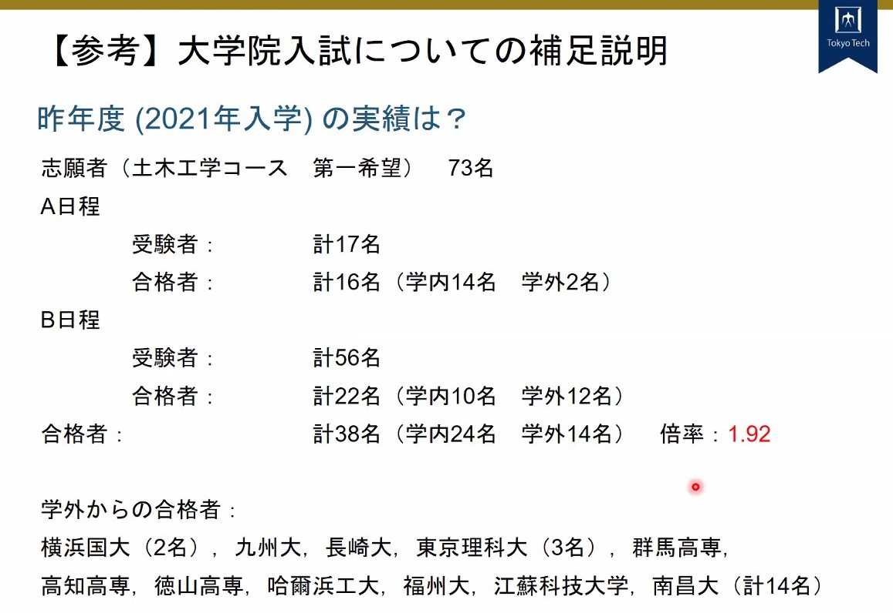

2021.7.17 東工大土木環境工学系 A日程入試
まとめてないので読みづらくてすみません、ブログ感覚
勉強
勉強は、大学2,3年での講義ノートを振り返るなどの復習は1,2割ほどで、ほとんど院試の過去問を通して勉強していた。院試は講義と同じ先生がつくっているので、知識が抜けていても図などでなんとなく思い出せるかも。院試で出た内容で不安なテーマがあれば、ノート、教科書で確認する形式だった。
A/B日程どっちであるかはA日程一週間前でないとわからないので、A,Bどちらが来てもいいように、7月はじめまでに最低2科目（A日程の口述試験は専門2科目で十分）は院試解けるレベルまで仕上げた方がよい。もしBだったら筆記試験本番までのもう1ヶ月で午前科目＆専門1科目を仕上げればいい感じな気がする。（ただ午前の教養数学は幅広いので1ヶ月で仕上げるのはきつい気もする）
説明会～出願
院試についての説明と、土木工学コースと都市・環境学コースの説明があった。院試については、TOEICスコア提出に注意することと、A日程合格者は原則東工大を第一志望とする者のみであることが伝えられる（後述するが、東大等の他大を第一志望とする場合はもしA日程であった場合も当日欠席してB日程に挑めばよい。）前年度入試データを紹介していたりもした。B日程確実な人は倍率で焦るかもしれない。

出願にあたっては、TOEICスコア原本の他にも成績証明書、卒業見込証明書が必要であるから、早めに自動発行機で発行しておくとよい。また、インターネット出願なので、証明写真はデータで持っていた方がよい。
出願で一番きついのは志望理由書だと思う。まだ研究テーマや修士のテーマが定まってない中で2000字を書かなければならないのは苦である。自分が卒論で取り組みそうなテーマについて論文等を調べてキーワードを抜き出してそれについて述べるといいと思う。志望理由については、「勉強したいから」ではなく（勉強は学士課程の範囲である）、「研究したい」を主題にストーリーを据えるのは当然か。また、「卒論の1年だけでは研究は不完全燃焼で、修士を含めた3年で充実した研究をしたい」とかはどうなんだろう。私は一日700文字弱を書いたので3日かかった。流石に2000字なので一日でまとめあげるのはきつい（というか1日で仕上げたものを出願に出したくない）。書きあげた志望理由書は出願3日前に助教に見てもらった。口頭試問は志望理由書をもとに行うはずなので、志望理由書は面接のカンペだと思って真剣に取り組むべき。
出願は、受付開始日に済ませた方がよい。入試課が受け取り書類に不備がなければ、出願サイトのマイページで「受理済」と表示される。なので、出願書類不備に怯えることはない。もし不備があっても早く出せば対応できる。また、面接は（A日程については）受験番号順だったので、出願早いほど楽である。
例年説明会は3月から5月で出願は6月上旬である。（ちなみに東大は説明会5月で出願7月上旬）
日程発表～前日
7.8にA/B日程発表があった。7.17がA日程なので、A日程本番からわずか1週間前での発表である。B日程（8月）のつもりで勉強していると、急に一週間前に本番くるので焦るかもしれない。私はA日程に期待していたので、もしB日程だったらどうしようなどと考えてたので日程発表前日はそわそわしてた。（でもところによっては前日にラボスからAである旨を伝えられた人もいるみたい、教授陣がA/Bの判定をしてるので事前に知っているはずか。）
A日程本番
8:45 M111集合。全員スーツである。集合場所が面接の待機室である（自分の番が近くなると別の場所に移動することになる）。集合場所の時点では大体全員ネクタイはしているがジャケットは脱いでた。内部生は会話している（結構うるさい）。外部性は静かだが外部生同士ではじめましての感じで喋ってる人もいた。M111の黒板には、面接順と専門知識の試問の科目選択について（後述）の掲示。内部生は12人、外部生は4,5人ほどだった。1人国交省に内定のため欠席がいたので内部生枠は13人だったとその場で推定。優先学生(9人)以外のA日程獲得は4人だった。
開始時間になると、廣瀬と齋藤が入室。廣瀬による出席確認後、都市・環境学コースの人は面接が別部屋なので、斎藤の誘導のもとM5緑ヶ丘ホールに移動。土木工学コースはM111で廣瀬が口述試験の説明開始。専門試問を数学構造水理土質コンクリ計画の6分野から2つ事前に決めておくよう言われる。（これはM111の黒板に事前に掲示されていた）また、面接は専門試問->志望動機などの順であることも伝えられる。順番は受験番号順だった。先頭の4人はすぐに面接会場のM5会議室（竹村の支持力試験の試問場所）に藤井の誘導のもと連れて行く。
次の4人集団になると藤井がM111に来て移動させられる。4人の直前の待機場所はM5の1Fのソファがあるところ。遅くともここでジャケットを着た方がよい。次の1人は会議室の扉の前の椅子で待機。夏本番で暑いこともあり待ち時間は長く感じる。自分が4人目の面接の場合、藤井は次の4人を藤井がM111から連れてくるために抜ける。
面接開始。藤井が扉を開けて迎え、入るように指示。なので、ノックして「失礼します」の定番の流れではなく困惑。椅子に座ってくださいと言われる。面接官は受験生を囲うようにコの字型に座っている。受験生から見て前に廣瀬。右に竹村岩波佐々木千々和（間違いない）。左に朝倉吉村瀬尾anil(なぜ?)（もっといたかも）。最初に受験番号と名前を言う。そして面接開始。
面接内容は後節で紹介。面接終了前に、他大の受験有無(a日程合格は東工大が第一志望の場合のみ)、受かったら入学することの確認で面接終了。1人全部で6-7分くらい？当日スケジュールでは7人を65分でさばくことになっているので長くても9分くらいかと。
終わったら終了者待機室なんてものはなくて帰宅。ちなみに待機室のM111に教授陣は待機していない。謎。一人一人試験内容違うので、意味ないけど。
口述試験内容
一人一人違う。専門の試問はたぶん完璧に答えられなくとも助け舟or質問の切り替えをしてくれるから知識があれば問題ないと思われる。志望理由は、出願時に提出する志望理由書に求められてる項目の範囲内なので、志望理由書を読み直してブラッシュアップしておくとよい。驚くような質問は飛んでこない。専門知識試問は自分の志望研究室の教授からは質問飛んでこないらしい（ほんと？）
数学
情報なし。
構造
一番人気？筆記だと計算重で猛威を振るうが口述だと計算ないので弱いか。聞かれている内容が例年構造力学第一がほとんどなので、そこらへんを復習するとよい。不静定構造に注意（不静定次数、仮想仕事の原理、重ね合わせの原理あたりがキー）。
別のwordを言うとそのwordについて質問してくる気まぐれスタイル。知らない単語を使うとその単語の説明を求められるので、理解が微妙なwordは言わないほうがよい。
- 私
質問者:廣瀬
・不静定構造どう解く？
・変形の適合条件って例えばなに？
・仮想仕事の原理ってなに？
- A
・断面量3種->軸力、剪断力、曲げモーメント
・そのうち変位に関わるのはどれか->曲げモーメント
・変位を求める方法とその説明->単位荷重法
- B
・静定と不静定があるが、不静定の説明とその解き方
・片持ち梁の先にピンがあったとき、どのように解く？
- C
・仮想仕事の原理とは
・どう使うか
- 過年度
・梁とトラスの違い
・座屈を防止するには？
・内部不静定と外部不静定とは
・影響線とは？
・影響線は何の役に立つか？
土質力学
2023年度入試までは竹村がいるため嫌いな人は注意
- D
・塑性限界と液性限界とは何か
・塑性限界を計測するために学生実験では何をやったか
- 過年度
・プロクターの原理
水理学
水理学のみと思いきや水環境工学の内容が飛んできたときもあるようだ
- D
・水のエネルギー保存則はなにか？
・水路を作るとしたらエネルギー損失を少なくするためにはどんなことに気をつければ良いか
- 過年度
・マニング式とは
・透水係数とは
・富栄養化のメカニズム(?)
コンクリート
1問だけ聞かれる？コンクリート材料も踏まえれば範囲は広いが教授が温厚なので、当たり？
- 私
質問者:千々和
・修正トラス理論とは？
- C
・RCの曲げ破壊時の荷重の求め方は？
- 過年度
・曲げ圧縮破壊とは？
・曲げ圧縮破壊はどのようなときに起こるか
・塩害が発生したときの対処
・フライアッシュとシリカフュームはどのようにできるか
計画
土木計画学というよりは交通システム工学の内容が多い？（というのも土木工学コース在籍の計画教授はどちらも都市計画系でなく交通計画系であるから？）
- A
・交通量配分とは
・UEとSOを説明して
・UEやSOを求める方法は？
- B
・交通量とか利用者の推定にはどんなモデルがある？->離散モデル
・離散モデルの代表的なものは？->ロジットモデル
・ロジットモデルのパラメータ推定の方法は？
それ以外
追加質問以外は、基本はみんな廣瀬から同じこと聞かれる。英語が得意みたいな話書くと竹村に絡まれるらしい。
- 私
質問者:廣瀬
・志望理由
・○○研を選んだのはなぜ
・卒業研究の内容は
他に質問ある先生いますか？->質問者:佐々木
・卒業後の進路は？
質問者:廣瀬
・最後になりますが、他大は受けていますか？
・合格したら必ず入学することになっていますが入りますか？
- B
質問者:Anil(?)
・TOEICスコア低いね（？）
都市・環境学コース希望学生の面接は別場所である。都市・環境学コースの場合は専門試問が存在せず、志望理由とそれに対する質問のみで終わるようだ。